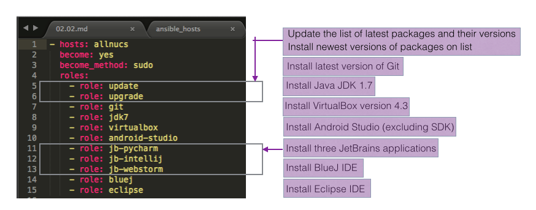
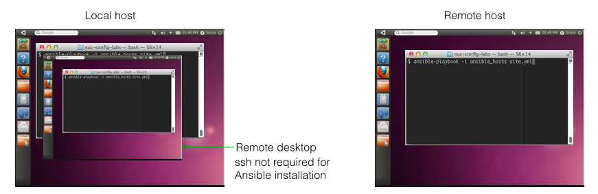
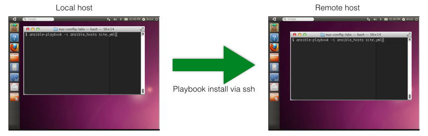
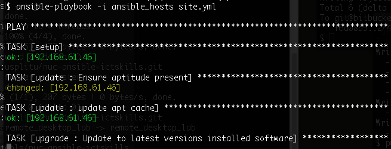

This document describes how a customized Ununtu installation is used to facilitate remote deskop viewing and configuration using Ansible technology. Customization of the Linux install medium comprises the introduction of two additional accounts, one serving the system administrator, the other the student. The system administrator account is configured for ssh tunnelling. The student account is partially ssh configured, requiring that the ssh authorized_keys file be introduced by the user once it has generated its personal ssh key pair, thus limiting access to that account to the student - the owner of the private key. Both accounts have administration level privilege.
nucadmin: this account is intended for system administators and has the following configuration:
ictskills: this account is intended for the student.
Generate an ssh key pair, create an ssh authorized_keys file and add the public key from the key pair just generated, transferring this file to the remote host, all as detailed here:
ssh-keygen -t rsa -b 4096 -f "ictskills_rsa" -C "your_email@example.com"
Create the authorized keys file in the remote host's .ssh folder to which you copy the generated public key (ictskills_rsa.pub):
scp ~/.ssh/ictskills_rsa.pub ictskills@remote_host_ip:/home/ictskills/.ssh/authorized_keys
Set the permissions on authorized_keys:
ssh ictskills@remote_host_ip
cd ~/.ssh
sudo chmod 600 authorized_keys
exit
Working on a terminal in the local host:
ssh -i ~/.ssh/ictskills_rsa ictskills@remote_host_ip -L 5900:localhost:5900 "x11vnc -noxdamage"
xtightvncviewer
Here we follow on from the previous step, relying on the same user and environment configurations.
We use the terms local host and localhost.
The following describes how to install the required applications to a remote host. These are the steps required. A more detailed description follows.
git clone https://usplitu@bitbucket.org/usplitu/nuc-ansible-ictskills.git

Decide if you wish to install from the remote desktop or from the local host (computer). See Figures 2 and 3.
Install Ansible on the host from which you decide to run the playbook
sudo apt-get install software-properties-common
sudo apt-add-repository ppa:ansible/ansible
sudo apt-get update
sudo apt-get install ansible
# localhost ansible_connection=local
#192.168.61.29 ansible_ssh_private_key_file=~/.ssh/ictskills_rsa ansible_ssh_user=ictskills
In a terminal, cd into the cloned nuc-ansible-ictskills and run the following command and expect a result somewhat like that shown in Figure 4.
ansible-playbook -i ansible_hosts site.yml


